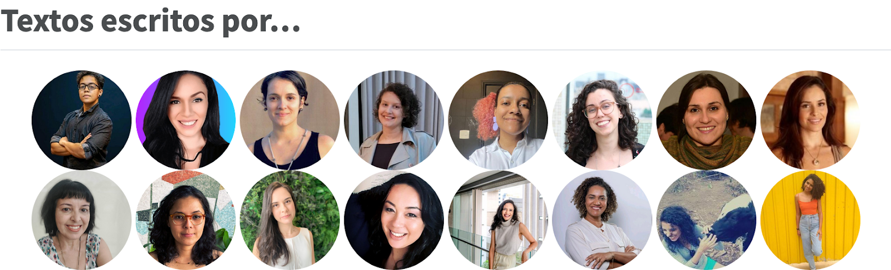

Introdução
Há um ano, lançamos o blog da R-Ladies São Paulo!
Nosso objetivo era criar um espaço onde as pessoas da comunidade R-Ladies São Paulo e no Brasil pudessem compartilhar conhecimento, experiências e celebrar as conquistas da nossa comunidade.
Hoje, estamos aqui para refletir sobre os momentos marcantes e agradecer a todas as pessoas que contribuíram para o sucesso deste projeto.
Retrospectiva
Ao longo do ano, publicamos uma série de posts abrangendo uma variedade de tópicos, desde tutoriais técnicos e análises de dados até relatos de eventos e histórias inspiradoras de pessoas da nossa comunidade. Foram 13 posts no total, com três deles traduzidos para o inglês.
Várias pessoas contribuíram com a escrita dos textos!

Posts sobre a comunidade, eventos e relatos pessoas
05/12/2022 - Boas vindas ao blog da R-Ladies São Paulo!
31/01/2023 - Evento: Oficina de Introdução ao R
27/03/2023 - Evento: Análise de dados abertos com R
10/05/2023 - Aprendendo a programar em quatro capítulos
24/05/2023 - Dados abertos de Educação: um exemplo aplicado ao jornalismo
02/10/2023 - Ações para ampliar a diversidade na comunidade R-Ladies São Paulo
21/11/2023 - Conhecendo o R, o Tidyverse e as R-Ladies
02/12/2023 - Pacotes em R de Dados Brasileiros
Posts sobre conceitos ou aplicações com R
14/12/2022 - Gráficos de barras com barras de erros: críticas e alternativas
07/02/2023 - E aí, vamos falar de Quarto?
01/03/2023 - TidyTuesday: Explorando dados sobre as Paraolimpíadas
02/06/2023 - Rita com R
31/10/2023 - Raspando a página do Studio Ghibli, na Wikipédia
Traduções
Para ampliar o público leitor, e possível impacto dos textos na comunidade de R em geral, traduzimos alguns dos nossos textos.
26/03/2023 - Event: Open Data Analysis with R
02/10/2023 - Actions to increase diversity in the R-Ladies São Paulo community
02/12/2023 - R Packages for Brazilian Data
Convite para o blog da R-Ladies Global
O post sobre ações para aumentar a diversidade na comunidade R-Ladies São Paulo foi escrito por uma sugestão da Yanina Bellini, que faz parte da equipe de liderança global da R-Ladies. O texto foi inicialmente publicado lá e repostado neste blog. Isso é ótimo, pois permite que um público maior encontre o texto e, no melhor dos cenários, replique algumas das ações que relatamos no texto. Imagina que legal seria ver outros capítulos da R-Ladies pelo mundo tendo um espaço Gugudadados?
Relatos da comunidade
Comecei a escrever sobre este 1 ano do blog… mas após escrever e reescrever a mesma frase cheguei à conclusão: queria mesmo é refletir sobre a importância do escrever como forma de compartilhar. Escrever para mim é e sempre foi um desafio, e talvez por isso eu tenha ido para a engenharia e não para ciências sociais ao fim do ensino médio. Porém, na graduação percebi (a obviedade de) que a escrita continua sendo fun-da-men-tal mesmo nas STEM: que delícia não é ler “Uma senhora toma chá” ou ver um código bem documentado?!
Aí, durante o mestrado, descobri que o desafiador mesmo para mim era menos a escrita e mais o “me sentir solitária no processo”. Isso vale para escrever texto ou escrever código. E por isso meu depoimento aqui hoje: este blog vem se configurando como um lugar de encontro. Não falo de encontros perfeitos e instagramáveis, refiro-me à uma tessitura de pensamentos múltiplos que as palavras possibilitam ir alinhando. Assim, agradeço a companhia de todas as pessoas que aqui escreveram, escrevem e escreverão <3 (Haydée Svab)
De antemão: é uma honra poder contribuir no post de aniversário de 1 ano do blog da R-Ladies São Paulo assim como foi uma honra ter um post meu publicado no blog da R-Ladies São Paulo! Muito obrigada, meninas! Bem, dentre tantos outros medos, escrever sempre foi uma tarefa deveras temerosa para mim. A sensação ao escrever é a de uma arma apontada para minha cabeça. Sem exagero. Mas quando escrevo, o coração fala. E quando escrevo, geralmente, é porque sou encorajada. O post do Studio Ghibli aqui do blog, por exemplo, foi porque alguém me disse uma vez que poderia virar justamente um post em um blog (lembra, Bea?) - se não fosse isso, certamente estaria “engavetado” na minha nuvem até hoje. Ter esse post publicado no blog da R-Ladies São Paulo foi uma parte do medo da escrita deixado para trás, que, a bem da verdade: vai sem Deus! Acolher, motivar e ensinar é como eu enxergo como sendo as nobres razões da existência deste blog. E por isso tudo, vida longa! (Ornella Scardua Ferreira)
Para complementar, acho que posts reflexivos como esse servem também para inspirar mais pessoas a adotarem o hábito de escreverem sobre temas variados. O processo mental de organizar as ideias e texto ajuda e muito em vários outros processos, principalmente o de aprendizado e também o de ensino. Vale a pena tentar =) (Carol Moreno)
Como contribuir?
Esperamos que mais pessoas se sintam inspiradas para compartilhar suas ideias e experiências no blog da R-Ladies São Paulo também!
Se você faz parte do público alvo da R-Ladies e gostaria contribuir com algum post ou conteúdo para o blog, a contribuição será muito bem vinda!
Nosso principal público-alvo são as pessoas que se identificam com gêneros sub-representados na comunidade R, portanto: mulheres cis, mulheres trans, homens trans, pessoas não-binárias e queer.
Existem várias formas de contribuir, como:
escrever algum texto não-técnico relacionado às atividades do grupo;
escrever algum texto técnico para o blog (por exemplo, mostrando alguma análise feita com R por você);
escrever algum texto sobre conceitos importantes para estatística, ciência de dados etc;
escrever algum tutorial sobre uso de algum pacote;
enviar algum texto já publicado em outras plataformas, que possa ser re-compartilhado aqui;
entre outros!
Para enviar sua contribuição, escolha um dos caminhos abaixo:
Se você faz parte do nosso grupo no telegram, pode falar por lá (de preferência no canal “Blog”).
Se você já usa o GitHub, pode criar uma issue com a sua ideia.
Ou, entre em contato com a Beatriz Milz, que é a mantenedora atual do blog: milz.bea@gmail.com . Deixe claro no assunto do email o assunto (ex: [BLOG R-LADIES SÃO PAULO] ….)
Conclusão
Agradecemos a todas as pessoas por fazerem parte desta jornada conosco, desde as pessoas que escreveram textos até as pessoas que compartilharam em suas redes.
E fica o convite para todas as pessoas que quiserem somar na comunidade por mais anos e anos!
Siga a R-Ladies São Paulo nas redes!
Não deixem de seguir a R-Ladies São Paulo em nossas redes sociais e se juntar ao nosso grupo no Telegram. Assim você fica por dentro de todas as novidades e eventos que estamos organizando!
Autoria
Post escrito colaborativamente, com contribuições de: